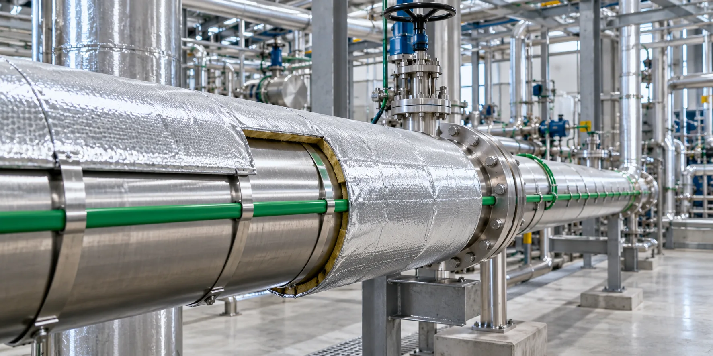
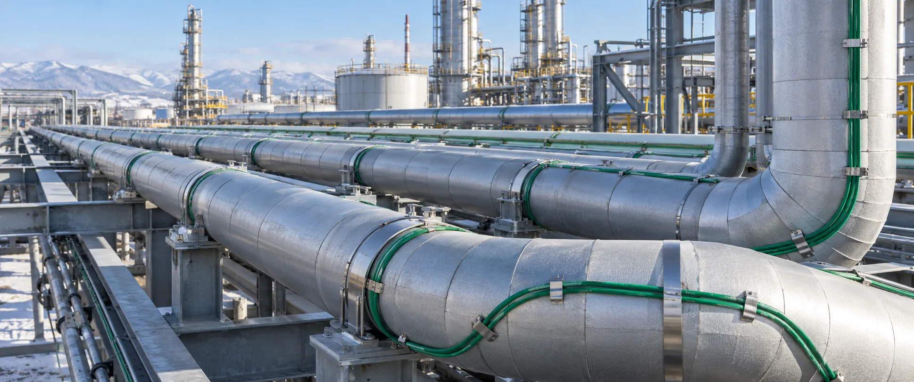
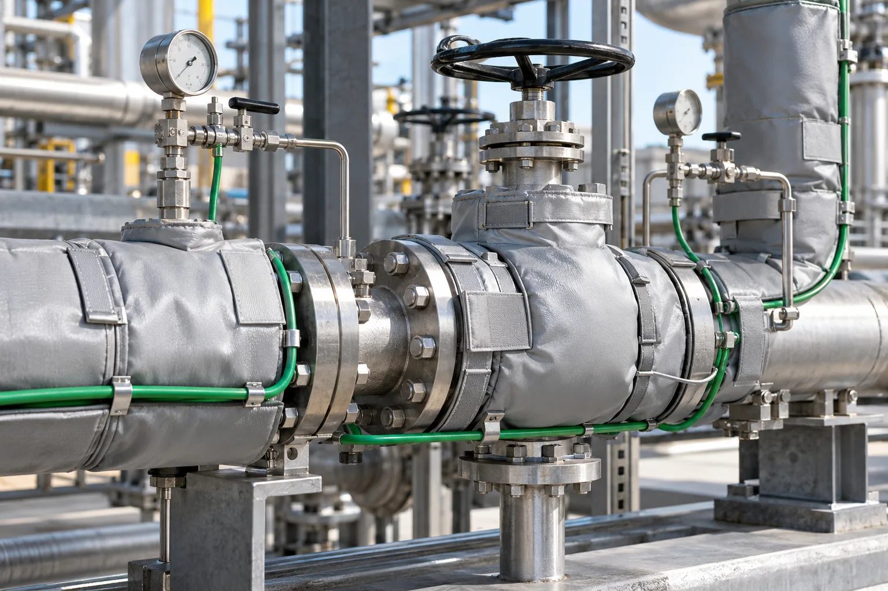
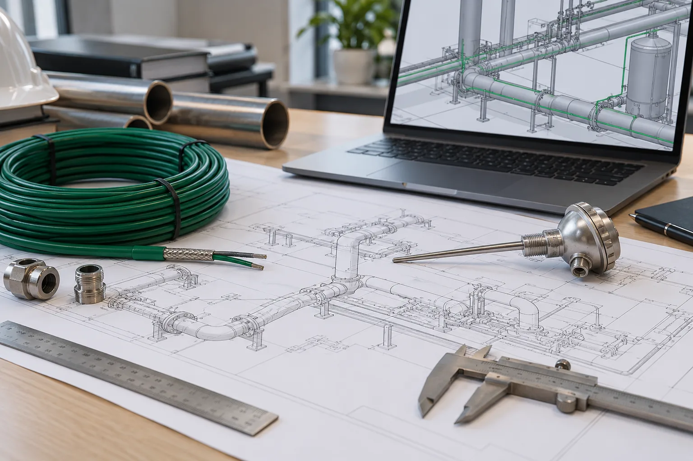

Защита от замерзания
Предотвращаем ледяные пробки, разрыв труб и остановку линии.

Комплексная система под ключ
Защищаем трубопроводы, арматуру и импульсные линии от замерзания. Поддерживаем технологическую температуру воды, нефтепродуктов, химических растворов и вязких сред.
Компенсируем теплопотери трубопровода и наиболее уязвимых узлов, чтобы среда сохраняла требуемые свойства, а линия оставалась работоспособной.
Предотвращаем ледяные пробки, разрыв труб и остановку линии.
Поддерживаем температуру мазута, масел, битума, серы и нефтепродуктов.
Защищаем задвижки и клапаны от замерзания и блокировки.
Поддерживаем заданную температуру продукта на трассе.
Предотвращаем замерзание импульсных линий и искажение показаний.
Арматура, фланцы, насосы и опоры имеют повышенные теплопотери и учитываются отдельно от прямой трубы.

Надземные и подземные водопроводы, канализация, нефте- и газопроводы, технологические линии.

Задвижки, вентили, клапаны, шаровые краны, дисковые затворы и массивные соединения.
Корпуса насосов, фильтры грубой очистки, грязевики и связанные технологические узлы.
Зоны контакта трубы с металлическими конструкциями, где теплопотери выше.
Трубки малого диаметра к датчикам, манометрам и приборам учёта.
Трубопроводы сброса и дренажа, уязвимые к замерзанию в простое.

Готовое инженерное решение
КОРДА рассчитывает и комплектует электрообогрев как единую систему. Кабель, управление, теплоизоляция и монтажные элементы подбираются совместно.
Один подрядчик для расчёта, комплектации, теплоизоляции и монтажа.
Диаметр, длина, материал, изоляция, климат, продукт, арматура и опоры.
Промышленные системы электрообогрева и склад в Санкт-Петербурге.
Официальный представитель; при необходимости доступны другие бренды.
«Корда-ЧСТЭ» для арматуры и нестандартных узлов.
Раскладка кабеля, электрическая схема, спецификация.
Кабель, управление и теплоизоляция.
Кабель и изоляция рассчитываются совместно.
Поддержка, ремонт и дооборудование.
От заявки до пусконаладки и дальнейшего сопровождения.
Уточняем первичную задачу.
Опросный лист, ТЗ, проект, схемы.
Среда, температуры и прокладка.
Теплопотери, мощность, длина и шаг.
Кабель, управление, изоляция.
Раскладка, электросхема, спецификация.
Стоимость и финальное КП.
Собираем и отгружаем заказ.
Монтируем систему.
Проверка, настройка, инструктаж.
Поддержка, ремонт, дооборудование.
Состав определяется расчётом, количеством зон и режимом эксплуатации трубопровода.
Серия и мощность выбираются по теплопотерям, температуре и условиям.
ON/OFF управление по заданной температуре.
Контроллер, датчики, защитная автоматика, сигнализация и диспетчеризация.
Универсальные и индивидуальные термочехлы, с обогревом или без.
Для разных участков трассы могут потребоваться разные способы укладки и управления.
Защита от замерзания или технологическая температура.
Определяют теплопотери и плотность укладки.
Саморегулирующийся или резистивный.
Подбирается соответствующая оболочка.
Учитывается максимальная температура воздействия.
Секции, питание и падение напряжения.
Материал и толщина влияют на мощность.
Термостат или шкаф управления.
Исходные данные позволяют определить теплопотери, мощность, длину кабеля и автоматику.
Учитываем холодные зоны, изоляцию, датчики и особенности монтажа.
Среда продолжает замерзать или остывать.
Риск перегрева, особенно на пластиковой трубе.
Локальный перегрев и выход кабеля из строя.
Холодные зоны возникают на задвижках и фланцах.
Растут теплопотери и энергопотребление.
Неверное управление температурой.
Электрическая защита должна входить в систему.
Риск недогрева или локального перегрева.
Промышленный электрообогрев и съёмная теплоизоляция для трубопроводов и оборудования.
Съёмные термочехлы с электрообогревом для поддержания температуры воздуха не ниже +20 °C.
Монтаж 20–30 минут.
133 быстросъёмных термочехла «Корда-ЧСТЭ» с электрообогревом.
Снижение теплопотерь и быстрый доступ.
Термочехлы с электрообогревом по индивидуальным чертежам.
Поддержание рабочих температур.
«Корда-ЧСТЭ» с электрообогревом на базе Lavita GWS 40-2 CR.
Замеры, проектирование, изготовление и монтаж съёмной теплоизоляции.
Монтаж около 20 минут.
Термочехлы по индивидуальным размерам.
Защита от замерзания и поддержание режима КИПиА.
Инженерный расчёт
Пришлите параметры трассы, температуры, сведения о продукте, теплоизоляции и электропитании.